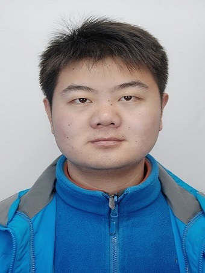

Welcome to Wei Xu's Website (under construction), currently I am PhD Candidate and a member of PAMI Lab, led by professor Jie Yang. (Here's the link of My CV)
|  | Wei Xu |
| |
|
Welcome to Wei Xu's Website (under construction), currently I am PhD Candidate and a member of PAMI Lab, led by professor Jie Yang. (Here's the link of My CV) |
| ||
My research interests include computer vision and machine learning with a focus on:
- Object detection and recognition
- Multimedia analysis and retrieval
- Transfer learning
- Curriculum learning/ self-paced learning
Wei Xu, Yijun Li, Chen Gong, Jie Yang. "Multi-view Implicit Transfer for Person re-identification".2015 IEEE International Conference on Acoustics, Speech and Signal Processing (ICASSP), pp. 1151-1155, 2015
Wei Xu, Jingao Liu, Mingming Cai, Minxia Wang. "A Camera Network for the Voxel Data Acquiring of the Three-dimensional Swept Volume Display".2012 IEEE International Conference on Information Science and Technology (ICIST), pp. 451-455, 2012.
Wei Xu, Boyu Si, Chuanwei Sun, Jingao Liu. "A Disparity Map Estimation Algorithm for the Three-dimensional Swept Volume Display: Optical Adaptive Direction Normalized Cross-correlation Window".2012 IEEE International Conference on Information Science and Technology (ICIST), pp. 574-578, 2012.
Wei Xu, Qiulin Cheng, Xiaoyu Chen, Jingao Liu. "Multi-view Stereo Depth-map Merging for the Three-dimensional Swept Volume Display".2012 IEEE International Conference on Information Science and Technology (ICIST), pp. 550-553, 2012.
Projects(under construction)
-Research assistant, Shanghai Jiao Tong University, Sep. 2013~contine ;
-Research assistant, University of Maryland, Baltimore County, Aug. 2012~Nov.2012
-Research assistant, East China Normal University, May. 2010~June.2012
-Software engineer graduate Intern, Intel Asia-Pacific Research and Development Center, Mar.2011~May.2011
-Interpreter of ECNU in the communication district of China International Industry Fair, Nov. 2009
-Commissary in charge of studies and Lab, Sep. 2007~Jun. 2009
| Mail: | Wei Xu | Office: | ROOM:2-235, School of Electronic Information and Electrical Engineering |
| Shanghai Jiaotong University, No.800 Dongchuan Road, | URL: | http://www.pami.sjtu.edu.cn/people/WeiXu/ | |
| Shanghai 200240, China | Email: | xuronaweizida@163.com; xuronaweizida@sjtu.edu.cn;xuronaweizida@gmail.com |
Last update:2017-05-22